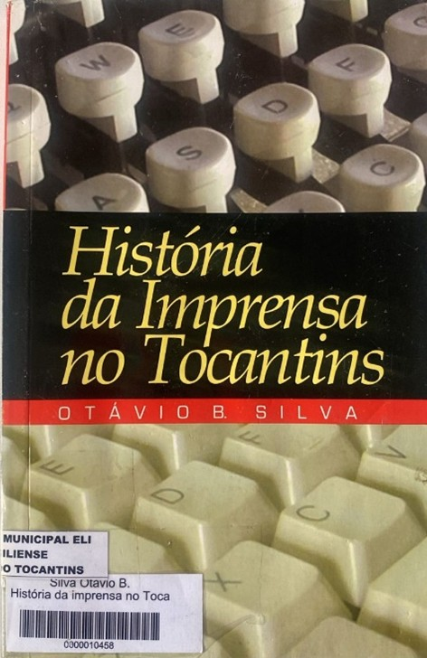
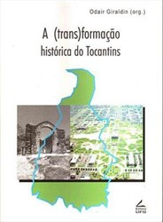

<style>
    section {
        display: flex;
        flex-direction: row;
        align-items: center;
        justify-content: center;
        gap: 40px;
        margin: 40px 0;
    }


    .conteudo {
        max-width: 1000px;
        font-family: Arial, sans-serif;
        font-size: 16px;
        line-height: 1.6;
        color: #333;
        text-align: justify;
    }

    .conteudo p {

        margin-bottom: 16px;
    }

    img {
        width: 300px;
        height: auto;
        border-radius: 8px;
    }
</style>
<section>


    <div class="conteudo">

        <h3>História da Imprensa no Tocantins</h3>
        <h5>Otávio Barros</h5>

        <p>O surgimento dos primeiros jornais do então norte goiano que noticiavam os costumes da época; ressalta a arte
            de fazer jornal; o mercado leitor, o mercado publicitário; a imprensa nortense, destacando o jornal Norte de
            Goyaz, bem como os primeiros jornalistas da região; a primeira rádio, a primeira emissora de televisão e os
            jornais do novo Estado.
            O autor faz, ainda, um apanhado de depoimentos dos primeiros jornalistas de Palmas. Vindos das mais variadas
            regiões do Brasil, estes profissionais relatam seus primeiros trabalhos e suas experiências no mais novo
            Estado da federação.
        </p>

        <h3>A (Trans) Formação Histórica do Tocantins</h3>

        <h5>Odair Giraldin (Org.)</h5>

        <p>Reúne treze autores, cujos trabalhos versam sobre aspectos da história da região que compreende haje o Estado
            do Tocantins. E uma coletânea que aborda desde a relação interétnica entre povos indígenas e não-indígenas,
            passando pela mineração do século XVIll; a história do cotidiano de Porto Nacional no final do século XIX e
            início do século XX, chegando até a construção da Belém-Brasília.
            O objetivo do trabalho foi mostrar que a formação histórica e cultural do que viria a se tomar o atual
            Estado do Tocantins é resultado de uma multiplicidade de eventos históricos e culturais - em sua
            dinamicidade - e de populações diversas ao longo de mais de duzentos anos.
        </p>

    </div>

    <div class="imagem">

        
        

    </div>
</section>